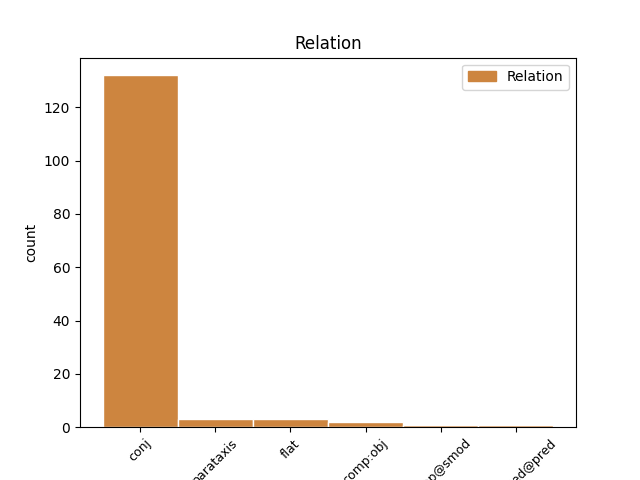
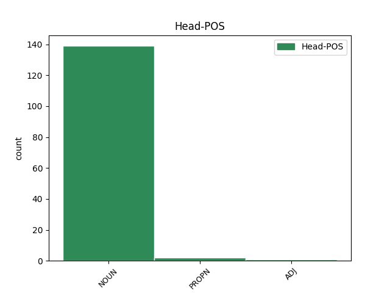
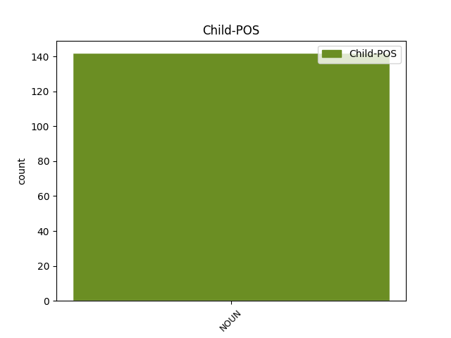

Distribution of features within this leaf



Agreement Rules sorted by frequency.
- When the dependent token is the conjunct(conj) of the head token, and the dependent token is NOUN.
1 Dè _ _ _ _ 0 _ _ _
2 fon _ _ _ _ 0 _ _ _
3 ghrèin _ _ _ _ 0 _ _ _
4 a _ _ _ _ 0 _ _ _
5 thachair _ _ _ _ 0 _ _ _
6 don _ _ _ _ 0 _ _ _
7 ghealltanas _ _ _ _ 0 _ _ _
8 a _ _ _ _ 0 _ _ _
9 fhuair _ _ _ _ 0 _ _ _
10 sinn _ _ _ _ 0 _ _ _
11 ann _ _ _ _ 0 _ _ _
12 an _ _ _ _ 0 _ _ _
13 1948 _ _ _ _ 0 _ _ _
14 nuair _ _ _ _ 0 _ _ _
15 a _ _ _ _ 0 _ _ _
16 chaidh _ _ _ _ 0 _ _ _
17 a _ _ _ _ 0 _ _ _
18 ghealltainn _ _ _ _ 0 _ _ _
19 dhuinn _ _ _ _ 0 _ _ _
20 nach _ _ _ _ 0 _ _ _
21 biodh _ _ _ _ 0 _ _ _
22 dìth dìth NOUN Ncsmn Case=Nom|Gender=Masc|Number=Sing 0 _ _ _
23 no _ _ _ _ 0 _ _ _
24 deireas deireas NOUN Ncsmn Case=Nom|Gender=Masc|Number=Sing 22 conj _ _
25 oirnn _ _ _ _ 0 _ _ _
26 bho _ _ _ _ 0 _ _ _
27 bhreith _ _ _ _ 0 _ _ _
28 gu _ _ _ _ 0 _ _ _
29 bàs _ _ _ _ 0 _ _ _
30 ? _ _ _ _ 0 _ _ _
1 Dh'eug _ _ _ _ 0 _ _ _
2 am _ _ _ _ 0 _ _ _
3 fear fear NOUN Ncsmn Case=Nom|Gender=Masc|Number=Sing 0 _ _ _
4 mu _ _ _ _ 0 _ _ _
5 dheireadh _ _ _ _ 0 _ _ _
6 de _ _ _ _ 0 _ _ _
7 na _ _ _ _ 0 _ _ _
8 seanchaidhean _ _ _ _ 0 _ _ _
9 foghlamaichte _ _ _ _ 0 _ _ _
10 seo _ _ _ _ 0 _ _ _
11 - _ _ _ _ 0 _ _ _
12 gu _ _ _ _ 0 _ _ _
13 dearbha _ _ _ _ 0 _ _ _
14 am _ _ _ _ 0 _ _ _
15 fear fear NOUN Ncsmn Case=Nom|Gender=Masc|Number=Sing 3 parataxis _ _
16 mu _ _ _ _ 0 _ _ _
17 dheireadh _ _ _ _ 0 _ _ _
18 de _ _ _ _ 0 _ _ _
19 a _ _ _ _ 0 _ _ _
20 sheòrsa _ _ _ _ 0 _ _ _
21 an _ _ _ _ 0 _ _ _
22 Alba _ _ _ _ 0 _ _ _
23 agus _ _ _ _ 0 _ _ _
24 an _ _ _ _ 0 _ _ _
25 Èirinn _ _ _ _ 0 _ _ _
26 - _ _ _ _ 0 _ _ _
27 ann _ _ _ _ 0 _ _ _
28 an _ _ _ _ 0 _ _ _
29 Uibhist _ _ _ _ 0 _ _ _
30 a _ _ _ _ 0 _ _ _
31 Deas _ _ _ _ 0 _ _ _
32 anns _ _ _ _ 0 _ _ _
33 an _ _ _ _ 0 _ _ _
34 ochdamh _ _ _ _ 0 _ _ _
35 ceud _ _ _ _ 0 _ _ _
36 deug _ _ _ _ 0 _ _ _
37 . _ _ _ _ 0 _ _ _
1 Tha _ _ _ _ 0 _ _ _
2 companaidh _ _ _ _ 0 _ _ _
3 dhrugaichean _ _ _ _ 0 _ _ _
4 Ameireaganach _ _ _ _ 0 _ _ _
5 dol _ _ _ _ 0 _ _ _
6 a _ _ _ _ 0 _ _ _
7 dhùblachadh _ _ _ _ 0 _ _ _
8 àireamh _ _ _ _ 0 _ _ _
9 an _ _ _ _ 0 _ _ _
10 luchd neach NOUN Ncsmg Case=Gen|Gender=Masc|Number=Sing 0 _ _ _
11 obrach obair NOUN Ncsfg Case=Gen|Gender=Fem|Number=Sing 10 flat _ _
12 ann _ _ _ _ 0 _ _ _
13 an _ _ _ _ 0 _ _ _
14 Alba _ _ _ _ 0 _ _ _
15 , _ _ _ _ 0 _ _ _
16 le _ _ _ _ 0 _ _ _
17 bhith _ _ _ _ 0 _ _ _
18 stèidheachadh _ _ _ _ 0 _ _ _
19 mìle _ _ _ _ 0 _ _ _
20 cosnadh _ _ _ _ 0 _ _ _
21 as _ _ _ _ 0 _ _ _
22 ùr _ _ _ _ 0 _ _ _
23 . _ _ _ _ 0 _ _ _
1 Eil _ _ _ _ 0 _ _ _
2 cuimhn' cuimhne NOUN Ncsfn Case=Nom|Gender=Fem|Number=Sing 0 _ _ _
3 agad _ _ _ _ 0 _ _ _
4 an _ _ _ _ 0 _ _ _
5 sgeulachd sgeulachd NOUN Ncsfn Case=Nom|Gender=Fem|Number=Sing 2 comp:obj _ _
6 annasach _ _ _ _ 0 _ _ _
7 eile _ _ _ _ 0 _ _ _
8 bha _ _ _ _ 0 _ _ _
9 thu _ _ _ _ 0 _ _ _
10 'g _ _ _ _ 0 _ _ _
11 innse _ _ _ _ 0 _ _ _
12 dhomh _ _ _ _ 0 _ _ _
13 mun _ _ _ _ 0 _ _ _
14 phroifeasair _ _ _ _ 0 _ _ _
15 a _ _ _ _ 0 _ _ _
16 bha _ _ _ _ 0 _ _ _
17 a' _ _ _ _ 0 _ _ _
18 càradh _ _ _ _ 0 _ _ _
19 beairt-fuaigheil _ _ _ _ 0 _ _ _
20 na _ _ _ _ 0 _ _ _
21 mnà _ _ _ _ 0 _ _ _
22 nuair _ _ _ _ 0 _ _ _
23 a _ _ _ _ 0 _ _ _
24 shiùd _ _ _ _ 0 _ _ _
25 i _ _ _ _ 0 _ _ _
26 air _ _ _ _ 0 _ _ _
27 falbh _ _ _ _ 0 _ _ _
28 e _ _ _ _ 0 _ _ _
29 an _ _ _ _ 0 _ _ _
30 comhair _ _ _ _ 0 _ _ _
31 a _ _ _ _ 0 _ _ _
32 chinn _ _ _ _ 0 _ _ _
33 a-steach _ _ _ _ 0 _ _ _
34 do _ _ _ _ 0 _ _ _
35 linn _ _ _ _ 0 _ _ _
36 eile _ _ _ _ 0 _ _ _
37 mìltean _ _ _ _ 0 _ _ _
38 bliadhna _ _ _ _ 0 _ _ _
39 air _ _ _ _ 0 _ _ _
40 falbh _ _ _ _ 0 _ _ _
41 ? _ _ _ _ 0 _ _ _
1 Tha _ _ _ _ 0 _ _ _
2 sgeulachd _ _ _ _ 0 _ _ _
3 agam _ _ _ _ 0 _ _ _
4 ri _ _ _ _ 0 _ _ _
5 innse _ _ _ _ 0 _ _ _
6 dhuibh _ _ _ _ 0 _ _ _
7 a _ _ _ _ 0 _ _ _
8 nochd _ _ _ _ 0 _ _ _
9 agus _ _ _ _ 0 _ _ _
10 tha _ _ _ _ 0 _ _ _
11 mi _ _ _ _ 0 _ _ _
12 ' _ _ _ _ 0 _ _ _
13 smaoineachadh _ _ _ _ 0 _ _ _
14 gun _ _ _ _ 0 _ _ _
15 creid _ _ _ _ 0 _ _ _
16 sibh _ _ _ _ 0 _ _ _
17 gun _ _ _ _ 0 _ _ _
18 gabhadh _ _ _ _ 0 _ _ _
19 e _ _ _ _ 0 _ _ _
20 tachairt _ _ _ _ 0 _ _ _
21 , _ _ _ _ 0 _ _ _
22 thoradh _ _ _ _ 0 _ _ _
23 àite _ _ _ _ 0 _ _ _
24 sònraichte _ _ _ _ 0 _ _ _
25 bha _ _ _ _ 0 _ _ _
26 'na _ _ _ _ 0 _ _ _
27 bhonn _ _ _ _ 0 _ _ _
28 stéidh _ _ _ _ 0 _ _ _
29 air _ _ _ _ 0 _ _ _
30 an _ _ _ _ 0 _ _ _
31 deach _ _ _ _ 0 _ _ _
32 a _ _ _ _ 0 _ _ _
33 togail _ _ _ _ 0 _ _ _
34 an _ _ _ _ 0 _ _ _
35 toiseach _ _ _ _ 0 _ _ _
36 , _ _ _ _ 0 _ _ _
37 tha _ _ _ _ 0 _ _ _
38 e _ _ _ _ 0 _ _ _
39 ri _ _ _ _ 0 _ _ _
40 fhaicinn _ _ _ _ 0 _ _ _
41 gun _ _ _ _ 0 _ _ _
42 a’ _ _ _ _ 0 _ _ _
43 latha _ _ _ _ 0 _ _ _
44 'n _ _ _ _ 0 _ _ _
45 diugh _ _ _ _ 0 _ _ _
46 : _ _ _ _ 0 _ _ _
47 ged _ _ _ _ 0 _ _ _
48 nach _ _ _ _ 0 _ _ _
49 fhaic _ _ _ _ 0 _ _ _
50 sinn _ _ _ _ 0 _ _ _
51 leis _ _ _ _ 0 _ _ _
52 an _ _ _ _ 0 _ _ _
53 t-sùil _ _ _ _ 0 _ _ _
54 e _ _ _ _ 0 _ _ _
55 no _ _ _ _ 0 _ _ _
56 le _ _ _ _ 0 _ _ _
57 glain'-amhairc _ _ _ _ 0 _ _ _
58 tha _ _ _ _ 0 _ _ _
59 e _ _ _ _ 0 _ _ _
60 ann _ _ _ _ 0 _ _ _
61 - _ _ _ _ 0 _ _ _
62 creag creag NOUN Ncsfn Case=Nom|Gender=Fem|Number=Sing 0 _ _ _
63 mhór _ _ _ _ 0 _ _ _
64 àrd _ _ _ _ 0 _ _ _
65 dà _ _ _ _ 0 _ _ _
66 cheud _ _ _ _ 0 _ _ _
67 mìle mìle NOUN Ncsfn Case=Nom|Gender=Fem|Number=Sing 62 udep@smod _ _
68 muigh _ _ _ _ 0 _ _ _
69 'sa' _ _ _ _ 0 _ _ _
70 Chuan _ _ _ _ 0 _ _ _
71 an _ _ _ _ 0 _ _ _
72 Iar _ _ _ _ 0 _ _ _
73 o _ _ _ _ 0 _ _ _
74 thaobh _ _ _ _ 0 _ _ _
75 an _ _ _ _ 0 _ _ _
76 iar _ _ _ _ 0 _ _ _
77 Uibhist _ _ _ _ 0 _ _ _
78 ris _ _ _ _ 0 _ _ _
79 an _ _ _ _ 0 _ _ _
80 cainte _ _ _ _ 0 _ _ _
81 o _ _ _ _ 0 _ _ _
82 chionn _ _ _ _ 0 _ _ _
83 fada _ _ _ _ 0 _ _ _
84 'sa' _ _ _ _ 0 _ _ _
85 Ghàidhlig _ _ _ _ 0 _ _ _
86 “ _ _ _ _ 0 _ _ _
87 Ròcabarraigh _ _ _ _ 0 _ _ _
88 " _ _ _ _ 0 _ _ _
89 ach _ _ _ _ 0 _ _ _
90 'sa' _ _ _ _ 0 _ _ _
91 chànan _ _ _ _ 0 _ _ _
92 Bheurla _ _ _ _ 0 _ _ _
93 'n _ _ _ _ 0 _ _ _
94 diugh _ _ _ _ 0 _ _ _
95 Rockall _ _ _ _ 0 _ _ _
96 , _ _ _ _ 0 _ _ _
97 ' _ _ _ _ 0 _ _ _
98 ciallachadh _ _ _ _ 0 _ _ _
99 gur _ _ _ _ 0 _ _ _
100 e _ _ _ _ 0 _ _ _
101 stall' _ _ _ _ 0 _ _ _
102 a _ _ _ _ 0 _ _ _
103 th' _ _ _ _ 0 _ _ _
104 ann _ _ _ _ 0 _ _ _
105 uileag _ _ _ _ 0 _ _ _
106 's _ _ _ _ 0 _ _ _
107 nach _ _ _ _ 0 _ _ _
108 eil _ _ _ _ 0 _ _ _
109 feur _ _ _ _ 0 _ _ _
110 idir _ _ _ _ 0 _ _ _
111 orra _ _ _ _ 0 _ _ _
112 . _ _ _ _ 0 _ _ _
1 Tha _ _ _ _ 0 _ _ _
2 e _ _ _ _ 0 _ _ _
3 a’ _ _ _ _ 0 _ _ _
4 cleachdadh _ _ _ _ 0 _ _ _
5 òigridh _ _ _ _ 0 _ _ _
6 ás _ _ _ _ 0 _ _ _
7 na _ _ _ _ 0 _ _ _
8 sgoiltean _ _ _ _ 0 _ _ _
9 Gàidhlig _ _ _ _ 0 _ _ _
10 air _ _ _ _ 0 _ _ _
11 feadh _ _ _ _ 0 _ _ _
12 na _ _ _ _ 0 _ _ _
13 dùthcha _ _ _ _ 0 _ _ _
14 agus _ _ _ _ 0 _ _ _
15 tha _ _ _ _ 0 _ _ _
16 measgachadh _ _ _ _ 0 _ _ _
17 math _ _ _ _ 0 _ _ _
18 ann _ _ _ _ 0 _ _ _
19 de _ _ _ _ 0 _ _ _
20 chuspairean _ _ _ _ 0 _ _ _
21 a _ _ _ _ 0 _ _ _
22 chòrdas _ _ _ _ 0 _ _ _
23 ris _ _ _ _ 0 _ _ _
24 an _ _ _ _ 0 _ _ _
25 òigridh _ _ _ _ 0 _ _ _
26 , _ _ _ _ 0 _ _ _
27 agus _ _ _ _ 0 _ _ _
28 tha _ _ _ _ 0 _ _ _
29 mi _ _ _ _ 0 _ _ _
30 cinnteach _ _ _ _ 0 _ _ _
31 gun _ _ _ _ 0 _ _ _
32 do _ _ _ _ 0 _ _ _
33 dhùisg _ _ _ _ 0 _ _ _
34 e _ _ _ _ 0 _ _ _
35 faireachdainnean _ _ _ _ 0 _ _ _
36 làidir _ _ _ _ 0 _ _ _
37 cuideachd _ _ _ _ 0 _ _ _
38 - _ _ _ _ 0 _ _ _
39 an _ _ _ _ 0 _ _ _
40 dàrna _ _ _ _ 0 _ _ _
41 leth _ _ _ _ 0 _ _ _
42 den _ _ _ _ 0 _ _ _
43 òigridh _ _ _ _ 0 _ _ _
44 a _ _ _ _ 0 _ _ _
45 bha _ _ _ _ 0 _ _ _
46 ga _ _ _ _ 0 _ _ _
47 choimhead _ _ _ _ 0 _ _ _
48 làn _ _ _ _ 0 _ _ _
49 farmaid _ _ _ _ 0 _ _ _
50 dhan _ _ _ _ 0 _ _ _
51 an _ _ _ _ 0 _ _ _
52 fheadhainn _ _ _ _ 0 _ _ _
53 a _ _ _ _ 0 _ _ _
54 fhuair _ _ _ _ 0 _ _ _
55 gu _ _ _ _ 0 _ _ _
56 Celtic _ _ _ _ 0 _ _ _
57 Park _ _ _ _ 0 _ _ _
58 , _ _ _ _ 0 _ _ _
59 agus _ _ _ _ 0 _ _ _
60 an _ _ _ _ 0 _ _ _
61 leth leth NOUN Ncsmn Case=Nom|Gender=Masc|Number=Sing 0 _ _ _
62 eile _ _ _ _ 0 _ _ _
63 làn làn NOUN Ncsmn Case=Nom|Gender=Masc|Number=Sing 61 comp:pred@pred _ _
64 feirg _ _ _ _ 0 _ _ _
65 nach _ _ _ _ 0 _ _ _
66 robh _ _ _ _ 0 _ _ _
67 iad _ _ _ _ 0 _ _ _
68 aig _ _ _ _ 0 _ _ _
69 Ibrox _ _ _ _ 0 _ _ _
70 . _ _ _ _ 0 _ _ _
Disagree Examples:
1 Bha _ _ _ _ 0 _ _ _
2 Iain _ _ _ _ 0 _ _ _
3 fhathast _ _ _ _ 0 _ _ _
4 gun _ _ _ _ 0 _ _ _
5 phòsadh pòsadh NOUN Ncsmd Case=Dat|Gender=Masc|Number=Sing 0 _ _ _
6 ach _ _ _ _ 0 _ _ _
7 a _ _ _ _ 0 _ _ _
8 shùil sùil NOUN Ncsfn Case=Nom|Gender=Fem|Number=Sing 5 conj _ _
9 air _ _ _ _ 0 _ _ _
10 Màiri _ _ _ _ 0 _ _ _
11 , _ _ _ _ 0 _ _ _
12 ach _ _ _ _ 0 _ _ _
13 gun _ _ _ _ 0 _ _ _
14 chabhaig _ _ _ _ 0 _ _ _
15 , _ _ _ _ 0 _ _ _
16 agus _ _ _ _ 0 _ _ _
17 is _ _ _ _ 0 _ _ _
18 dòch' _ _ _ _ 0 _ _ _
19 air _ _ _ _ 0 _ _ _
20 tè _ _ _ _ 0 _ _ _
21 no _ _ _ _ 0 _ _ _
22 dhà _ _ _ _ 0 _ _ _
23 eile _ _ _ _ 0 _ _ _
24 a _ _ _ _ 0 _ _ _
25 thigeadh _ _ _ _ 0 _ _ _
26 na _ _ _ _ 0 _ _ _
27 shealladh _ _ _ _ 0 _ _ _
28 . _ _ _ _ 0 _ _ _
1 Dòcha _ _ _ _ 0 _ _ _
2 gum _ _ _ _ 0 _ _ _
3 b' _ _ _ _ 0 _ _ _
4 e _ _ _ _ 0 _ _ _
5 gnè _ _ _ _ 0 _ _ _
6 de _ _ _ _ 0 _ _ _
7 thàmailt _ _ _ _ 0 _ _ _
8 no _ _ _ _ 0 _ _ _
9 de _ _ _ _ 0 _ _ _
10 dh'eud _ _ _ _ 0 _ _ _
11 a _ _ _ _ 0 _ _ _
12 thug _ _ _ _ 0 _ _ _
13 air _ _ _ _ 0 _ _ _
14 Tormod _ _ _ _ 0 _ _ _
15 bristeadh _ _ _ _ 0 _ _ _
16 a-staigh _ _ _ _ 0 _ _ _
17 leis _ _ _ _ 0 _ _ _
18 na _ _ _ _ 0 _ _ _
19 faclan _ _ _ _ 0 _ _ _
20 " _ _ _ _ 0 _ _ _
21 Geall _ _ _ _ 0 _ _ _
22 , _ _ _ _ 0 _ _ _
23 Iain _ _ _ _ 0 _ _ _
24 , _ _ _ _ 0 _ _ _
25 nach _ _ _ _ 0 _ _ _
26 rachadh _ _ _ _ 0 _ _ _
27 tu _ _ _ _ 0 _ _ _
28 leat _ _ _ _ 0 _ _ _
29 fhèin _ _ _ _ 0 _ _ _
30 gu _ _ _ _ 0 _ _ _
31 Clachan _ _ _ _ 0 _ _ _
32 Trianaoin _ _ _ _ 0 _ _ _
33 aig _ _ _ _ 0 _ _ _
34 meadhan-oidhche meadhan-oidhche NOUN Ncsmd Case=Dat|Gender=Masc|Number=Sing 0 _ _ _
35 is _ _ _ _ 0 _ _ _
36 a' _ _ _ _ 0 _ _ _
37 ghealach gealach NOUN Ncsfn Case=Nom|Gender=Fem|Number=Sing 34 conj _ _
38 slàn _ _ _ _ 0 _ _ _
39 . _ _ _ _ 0 _ _ _
40 " _ _ _ _ 0 _ _ _
1 Bheachdaich _ _ _ _ 0 _ _ _
2 e _ _ _ _ 0 _ _ _
3 gu _ _ _ _ 0 _ _ _
4 mionaideach _ _ _ _ 0 _ _ _
5 air _ _ _ _ 0 _ _ _
6 na _ _ _ _ 0 _ _ _
7 clachan _ _ _ _ 0 _ _ _
8 tro _ _ _ _ 0 _ _ _
9 chòrr còrr NOUN Ncsmd Case=Dat|Gender=Masc|Number=Sing 0 _ _ _
10 is _ _ _ _ 0 _ _ _
11 aonghlainne aonghlainne NOUN Ncsfn Case=Nom|Gender=Fem|Number=Sing 9 conj _ SpaceAfter=No
12 . _ _ _ _ 0 _ _ _
1 Cur _ _ _ _ 0 _ _ _
2 is _ _ _ _ 0 _ _ _
3 dlùth _ _ _ _ 0 _ _ _
4 na _ _ _ _ 0 _ _ _
5 fighe _ _ _ _ 0 _ _ _
6 , _ _ _ _ 0 _ _ _
7 bheil _ _ _ _ 0 _ _ _
8 thu _ _ _ _ 0 _ _ _
9 tuigsinn _ _ _ _ 0 _ _ _
10 - _ _ _ _ 0 _ _ _
11 tha _ _ _ _ 0 _ _ _
12 mar _ _ _ _ 0 _ _ _
13 gum _ _ _ _ 0 _ _ _
14 bitheadh _ _ _ _ 0 _ _ _
15 colas _ _ _ _ 0 _ _ _
16 aca _ _ _ _ 0 _ _ _
17 ri _ _ _ _ 0 _ _ _
18 sreath _ _ _ _ 0 _ _ _
19 de _ _ _ _ 0 _ _ _
20 shnàithleanan _ _ _ _ 0 _ _ _
21 tìm _ _ _ _ 0 _ _ _
22 , _ _ _ _ 0 _ _ _
23 'sa _ _ _ _ 0 _ _ _
24 bheil _ _ _ _ 0 _ _ _
25 sinn _ _ _ _ 0 _ _ _
26 a' _ _ _ _ 0 _ _ _
27 fighe _ _ _ _ 0 _ _ _
28 cur cur NOUN Ncsmn Case=Nom|Gender=Masc|Number=Sing 0 _ _ _
29 ar _ _ _ _ 0 _ _ _
30 beatha _ _ _ _ 0 _ _ _
31 's _ _ _ _ 0 _ _ _
32 ar _ _ _ _ 0 _ _ _
33 bliadhnaichean bliadhna NOUN Ncpfg Case=Gen|Gender=Fem|Number=Plur 28 conj _ SpaceAfter=No
34 . _ _ _ _ 0 _ _ _
1 Bho _ _ _ _ 0 _ _ _
2 chionn _ _ _ _ 0 _ _ _
3 aon _ _ _ _ 0 _ _ _
4 cheithir _ _ _ _ 0 _ _ _
5 bliadhna _ _ _ _ 0 _ _ _
6 cheannaich _ _ _ _ 0 _ _ _
7 Labhruinn _ _ _ _ 0 _ _ _
8 seann _ _ _ _ 0 _ _ _
9 tigh-croiteir tigh-croiteir NOUN Ncsmn Case=Nom|Gender=Masc|Number=Sing 0 _ _ _
10 le _ _ _ _ 0 _ _ _
11 bàthaich _ _ _ _ 0 _ _ _
12 is _ _ _ _ 0 _ _ _
13 sabhal sabhal NOUN Ncsmd Case=Dat|Gender=Masc|Number=Sing 9 conj _ _
14 mór _ _ _ _ 0 _ _ _
15 . _ _ _ _ 0 _ _ _